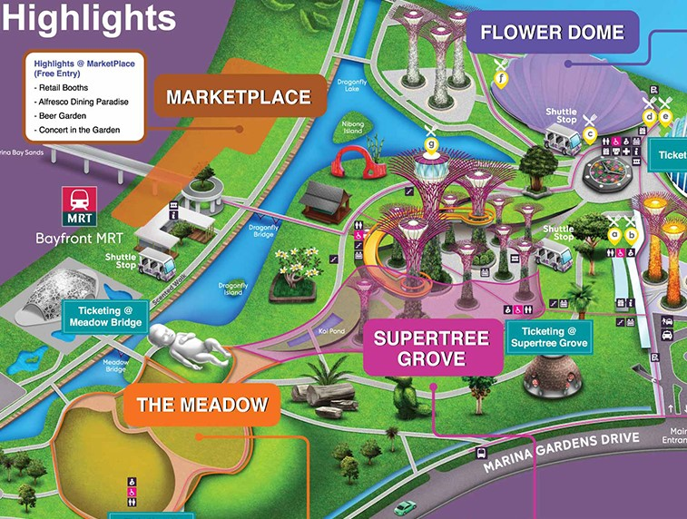
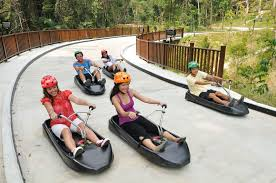

____________|| GARDENS BY THE BAY ||____________
SINGAPORE
A PARADISE FILLED WITH FLORAL FANTASY!
Supertree, Waterfall, Wetland, Garden and Lakes... Can't get enough of this place!
Slideshow Gallery
Gardens by the Bay is an award-winning public garden in Singapore.
With over 75 million visitors to date, this Garden is a popular destination for locals and tourists.
This green haven in the city will be an ideal destination for families, sports enthusiasts or anyone who wants to soak up some sun and get some fresh air!
The gardens have three distinct gardens, Bay South, Bay East and Bay Central, which range in size.
Still, all offer different benefits to their visitors. Each with its own features and benefits.
Here are some places that you can visit at Gardens by the Bay.. Explore them all!
MAP OF GARDENS BY THE BAY
Click on the map to find out more about the places to visit in Gardens by the bay!
Click here to download PDF

FLOWER DOME
A place filled with blooming flowers
The Flower Dome is a must-see for visitors as it’s home to more than 20,000 plants from 200 species.
This space is almost two acres large and contains an extensive network of 12 interconnected domes that give you access to different types of plants and gardens.
Be awed by the Flower Dome’s beauty and its sheer size.
This huge, cooled conservatory holds the Guinness World Record for the largest glass greenhouse!
Come explore and learn more about this innovative megastructure that houses the world’s flora under one roof.
For ticket prices and booking, click here.

SUPERTREE GROVE
Vertical gardens that will delight any plant lover
Supertrees are sustainable vertical gardens housing over 162,900 plants of more than 200 species.
Seven of the 18 supertrees are designed to harvest solar energy, and 11 have photovoltaic cells for green power.
The tallest tree, the OCBC Skyway, allows for an up-close experience of these gardens by sitting 22 meters above ground with panoramic views of Marina Bay.
Soak in these spectacular views against the Marina Bay skyline while listening to live musicians play during Garden Rhapsody shows which simulate ‘live’ music at various spots throughout each show using 68 independent audio speakers!
For more details, click here.
THE MEADOW
A world-class location for large-scale events
Singapore’s largest outdoor garden event space, The Meadow offers a standing capacity of up to 30,000 people.
With panoramic views of the Gardens’ cooled conservatories, Supertrees, and Singapore’s downtown cityscape, this flower bowl-shaped venue provides the most spectacular backdrop for mega concerts and other large-scale events.
For more details on bookings and upcoming events, click here.
MARKETPLACE
Bayfront pop-up market
The ever-popular MarketPlace returns to Bayfront Plaza, occupying the non-ticketed space outside Bayfront MRT with over 100 booths selling food and beverages, plants, gardening and botanical resources, and arts and crafts.
Come and support local businesses and social enterprises at this pop-up weekly marketplace at Bayfront Plaza (next to Bayfront MRT), and splash some cash on a wide variety of unique wares, artisanal products and handmade knick-knacks.
For more details, click here.


Here at this family-friendly beach, we have:
- Palawan Pirate Ship Water Playground for kids splish 'n' splash!
- Animal & Bird Encounters for family photo-taking
- Rope Bridge with a watchtower on the other end for the brilliant seaview
... and many more!

Tourist Attractions
Universal Studios Singapore
Opening Hours:
10am - 7pm (Mon - Thu) / 10am - 10pm (Fri - Sun)

S.E.A. Aquarium
Opening Hours: 10am - 7pm daily
/p>

Click here to purchase tickets
What's More?
The Luge
Opening Hours: 10am - 930pm daily
Cable Car

Beach Volleyball

Frisbee

Cycling
And Many More!
To find out more about places for sports and physical activities,
Visit SG2gether Sports!
Map of Sentosa Island

Click here to download PDF